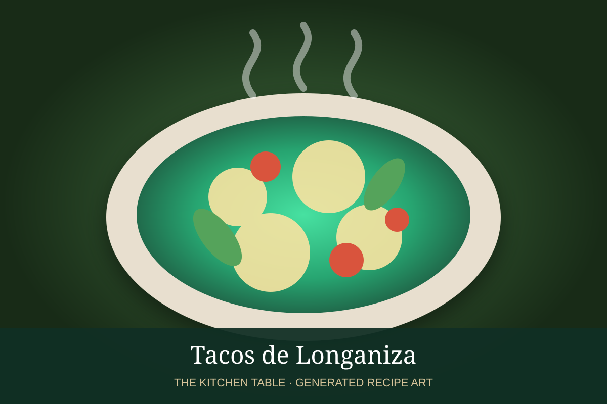

← Back to all recipes
PORK · MEXICAN
Tacos de Longaniza
Crisp-edged Mexican longaniza sausage chopped on the griddle and served with onion, cilantro, lime, and salsa.
25 minMakes 10 tacos

Photo: Wikimedia Commons
Ingredients
- 1 1/2 lb Mexican longaniza
- 1 tbsp neutral oil, if needed
- 10 corn tortillas
- Chopped onion
- Chopped cilantro
- Lime wedges
- Salsa morita, salsa roja, or salsa taquera
Preparation
- Remove longaniza from casing if necessary.
- Cook on a hot griddle or skillet, breaking it into coarse pieces.
- Continue cooking until browned and crisp at the edges and fully cooked.
- Warm tortillas.
- Fill with longaniza and top with onion, cilantro, lime, and salsa.